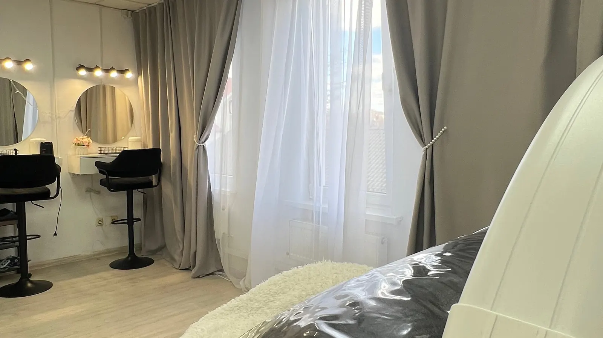
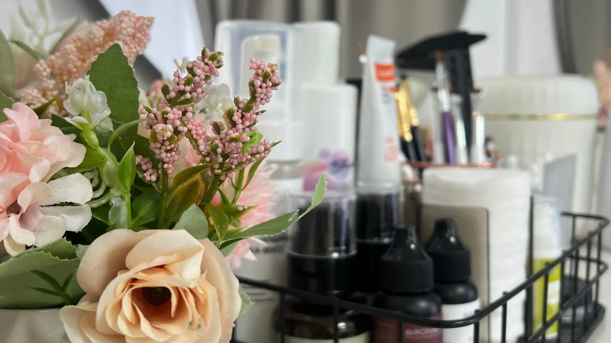

Анна
Ламинирование и наращивание ресниц, брови, перманентный макияж бровей и губ. Клиентки пишут: «мастер поняла что я хочу с полуслова».
- Ламинирование ресницоколо часа ·1 500 ₽
- Перманент бровей или губоколо 2 часов ·4 000 ₽

Лисий или кукольный эффект – подберём до процедуры. Ламинирование от 1 500 ₽, брови и перманент в той же студии.

Так пишет клиентка на Яндекс.Картах. Про разные эффекты обычно узнают только на процедуре.
Сколько стоит 2D или 4D, приходится уточнять сообщением и ждать ответа.
Два мастера, две записи, два разных дня.
Здесь всё видно заранее: эффект подбираем под ваш взгляд, цены – в прайсе ниже, ресницы, брови и перманент – у одного мастера, за один визит.
Ламинирование и наращивание ресниц, брови, перманентный макияж бровей и губ. Клиентки пишут: «мастер поняла что я хочу с полуслова».

Цены с карточки студии на Яндекс.Картах. Точную стоимость мастер подтвердит при записи.

Четыре вещи из отзывов клиенток на Яндекс.Картах – их словами.
Скопированы с карточки без правок.
«Пришла на ламинирование ресничек, к мастеру Анна, в восторге и в шоке полном, очень красиво у нас получилось, процедура безболезненная, ресницы безупречные, длинные и слегка кажется что нарощенные) Я очень довольна!»
«Сделали реснички очень быстро, в очень удобном кресле и приятной обстановке! Носка прекрасная, да и мастер поняла что я хочу с полуслова»
«Анна, спасибо большое за шикарный перманент губ! Цвет просто восторг, зажило всё идеально и очень быстро. Обязательно вернусь к тебе снова. 🥰»
Ответим ближайшим свободным окном. Не любите писать – позвоните.
Пишите в Telegram процедуру и удобный день – мастер подтвердит время.